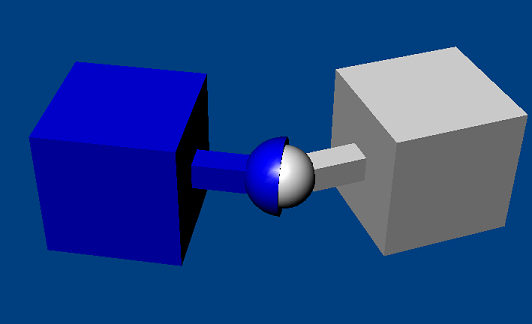

A spherical joint is the simplest kind of joint. It constrains two points on two different bodies from coinciding. This point, located in world space, is the only parameter that has to be specified (the other parameters are optional). Specifying the anchor point (point that is forced to coincide) in world space guarantees that the point in the local space of each body will coincide when the point is transformed back from local into world space.
By attaching a series of spherical joints and bodies, chains/ropes can be created. Another example for a common spherical joint is a person's shoulder, which is quite limited in its range of motion (see the Spherical Joint Limits section below).
DOFs removed: 3
DOFs remaining: 3
|
Parameter |
Description |
| actor[0] | First actor |
| actor[1] | Second actor |
| localAnchor[0] | Attachment point on the first actor. |
| localAnchor[1] | Attachment point on the second actor (the attachment points should coincide). |
| Limits: | |
| localAxis[0] | The joint axes are used to enforce joint limits. |
| localAxis[1] | |
| swingAxis | Defines the center of the swing limit cone, attached to actor 0. |
| swingLimit | Defines the angle which the joint can rotate away from the swing axis. |
| twistLimit | Defines the high and low limits for twist around the joint axis. |
| Springs: | |
| twistSpring | Spring which attempts to return the twist to the target value. |
| swingSpring | Spring which attempts to return the joint axis to the swingAxis. |
| jointSpring | Specifies how much the joint can be pulled apart if joint spring is enabled. |
| flags: | |
| NX_SJF_TWIST_LIMIT_ENABLED | true if the twist limit is enabled |
| NX_SJF_SWING_LIMIT_ENABLED | true if the swing limit is enabled |
| NX_SJF_TWIST_SPRING_ENABLED | true if the twist spring is enabled |
| NX_SJF_SWING_SPRING_ENABLED | true if the swing spring is enabled |
| NX_SJF_JOINT_SPRING_ENABLED | true if the joint spring is enabled |
NOTE: When setting localAnchor[] it is generally convenient to
use setGlobalAnchor() to set the anchor with a world space point.
NOTE: When setting localAxis[] it is generally convenient to use
setGlobalAxis() to set the axis with a world space axis.
NOTE: When specifying the joint axis it is also important to specify
the localNormal[] which should be orthogonal to the localAxis[]. The
localNormal[] is needed to specify joint limits.
Spherical joints allow limits that can approximate the physical limits of motion on a human arm. It is possible to specify a cone which limits how far the arm can swing from a given axis. In addition, a twist limit can be specified which controls how much the arm is allowed to twist around its own axis.
NOTE: There are similar restrictions on the twist limits for spherical joints as there are for revolute joints.
NxSphericalJointDesc sphericalDesc;
sphericalDesc.actor[0] = actor0;
sphericalDesc.actor[1] = actor1;
//Point which both of the bodies are constrained to share (relative to each other).
sphericalDesc.setGlobalAnchor(globalAnchor);
NxSphericalJoint* sphereJoint=gScene->createJoint(sphericalDesc);